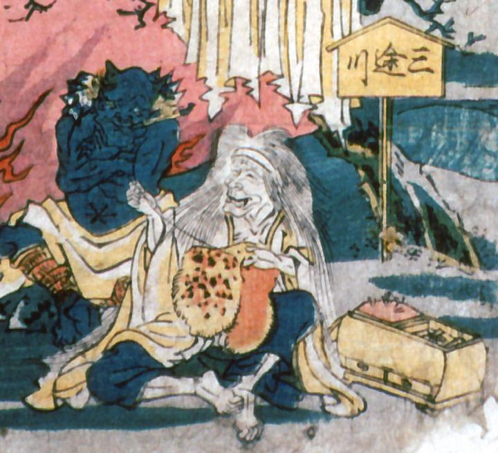

にこやかに座って豹柄の腰巻を縫う老婆。三途川という立て札があることから奪衣婆か。
著作者：歌川貞重／出典：親書誌：A5_pushkin_0033：教訓三界図会；キョウクンサンガイズエ／日付：2011／資源識別子：A5_pushkin_0033_0012_0000
Copyright (c)2010- International Research Center for Japanese Studies, Kyoto, Japan. All rights reserved.